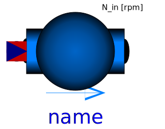

| Name | Description |
|---|---|
| Varying cylindric volume depending on the position of the piston | |
| Centrifugal pump with mechanical connector for the shaft | |
| Centrifugal pump with ideally controlled mass flow rate | |
|  PrescribedPump | Centrifugal pump with ideally controlled speed |
| Base classes used in the Machines package (only of interest to build new component models) |